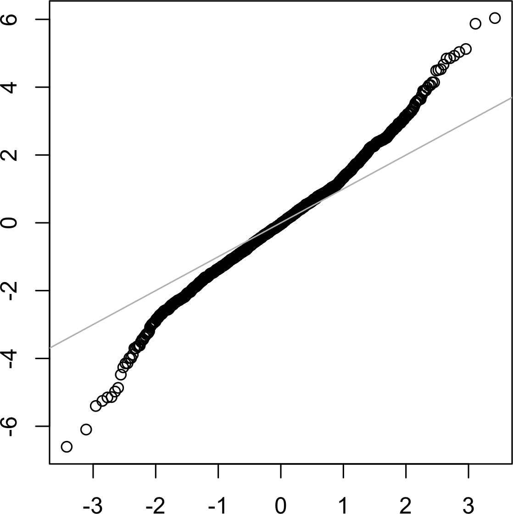

Distribuições
Created by Fernando Marques
 ## Distribuição normal
- Em forma de sino e icônica em estatística
- Estatísticas amostrais terem esse formato a transformou
em uma ferramenta para aproximações

- 68% dos dados estão a um desvio padrão da média
## Distribuição normal
- __Padronizar__ subtrair a média e dividir pelo desvio padrão
- __Escore-z__ é o número de desvios padrão acima ou abaixo da média da população
- __Normal padrão__ distribuição normal com média 0 e desvio 1
- __Gráfico Q-Q__ usado visualizar o quão próximo a distribuição amostrada
está próxima da distribuição padrão
## Distribuição normal
- É um equívoco achar que a distribuição normal tem esse nome pois a maioria
dos dados a seguirem, ou seja, ser o normal
- Na verdade, a maioria dos dados puros __não são__ normalmente distribuídos
- A maioria das estatísticas amostrais são distribuídas normalmente
- Também é chamada de distribuição gaussiana
## Distribuição normal padrão
- A distribuição normal padrão tem as unidades em termo de desvio padrão de distância da média
- Para comparar dados com a normal padrão subtraímos a média e dividimos pelo desvio padrão
- Converter os dados para escore-z não os tornam normalmente distribuídos,
apenas os colocam na mesma escala para comparação
## Distribuição normal
- Em forma de sino e icônica em estatística
- Estatísticas amostrais terem esse formato a transformou
em uma ferramenta para aproximações

- 68% dos dados estão a um desvio padrão da média
## Distribuição normal
- __Padronizar__ subtrair a média e dividir pelo desvio padrão
- __Escore-z__ é o número de desvios padrão acima ou abaixo da média da população
- __Normal padrão__ distribuição normal com média 0 e desvio 1
- __Gráfico Q-Q__ usado visualizar o quão próximo a distribuição amostrada
está próxima da distribuição padrão
## Distribuição normal
- É um equívoco achar que a distribuição normal tem esse nome pois a maioria
dos dados a seguirem, ou seja, ser o normal
- Na verdade, a maioria dos dados puros __não são__ normalmente distribuídos
- A maioria das estatísticas amostrais são distribuídas normalmente
- Também é chamada de distribuição gaussiana
## Distribuição normal padrão
- A distribuição normal padrão tem as unidades em termo de desvio padrão de distância da média
- Para comparar dados com a normal padrão subtraímos a média e dividimos pelo desvio padrão
- Converter os dados para escore-z não os tornam normalmente distribuídos,
apenas os colocam na mesma escala para comparação
norm_samp <- rnorm(100) # Gera 100 números 'normais'
qqnorm(norm_samp)
abline(a=0, b=1, col='grey')
 - A distribuição normal foi essencial para o desenvolvimento de estatísticas, permitindo aproximação matemática
- Apesar de dados não serem normalmente normalmente distribuídos, os erros, médias e totais
em amostras grandes são
- Para converter para escore-z subtraímos a média e dividimos pelo desvio padrão
## Distribuições de cauda longa
- __Cauda__ porção longa e estreita de uma distribuição de frequência, valores extremos ocorrem com baixa frequência
- __Assimetria__ quando uma cauda é maior do que a outra
- A distribuição normal foi essencial para o desenvolvimento de estatísticas, permitindo aproximação matemática
- Apesar de dados não serem normalmente normalmente distribuídos, os erros, médias e totais
em amostras grandes são
- Para converter para escore-z subtraímos a média e dividimos pelo desvio padrão
## Distribuições de cauda longa
- __Cauda__ porção longa e estreita de uma distribuição de frequência, valores extremos ocorrem com baixa frequência
- __Assimetria__ quando uma cauda é maior do que a outra
Distribuição de cauda longa
- Em alguns casos a distribuição é altamente assimétrica (renda)
- Os valores extremos correspondem as caudas
- A teoria do Cisne Negro de Nassim Taleb prevê que eventos anômalos são mais
prováveis de acontecer do que se fosse previsto pela distribuição normal
nflx <-sp400_px[,'NFLX']
nflx <-diff(log(nflx[fxlf>0]))
qqnorm(nflx)
abline(a=0,b=1,col="grey")

- Contrário do outro Q-Q os valores extremos estão mais longe da linha
- Isso significa que é mais provável de observar valores extremos do que seria
esperado em uma distribuição normal
- Reparem também que a um desvio padrão da média os pontos estão mais próximos da reta
- Dados não costumam ser normalmente distribuídos
## Student's Distribuição-t
- É chamada de Student T pois W.S. Gosset submeteu o artigo sob o nome de "Student"
- Gosset trabalhava para a Guiness, por isso a submissão anônima
- Tenta responder a pergunta
> Qual é a distribuição amostral da média de uma amostra de uma população grande?
## Student's Distribuição-t
- Se a computação fosse mais acessível em 1908, estatísticos teriam utilizado métodos de
reamostragem computacionalmente intensivos
- Como não foi o caso, foi necessário fazer uso da matemática para aproximar a distribuição amostral
- Apesar do bootstrap responder a maioria das perguntas, alguns outputs de software estatísticos fazem uso de t-statistics
- Por exemplo testes A/B e regressões
- A distribuição-t é uma família de distribuições que lembram a distribuição normal
- Mas possuem cauda mais longa
- É muito utilizado como base de referência para média de amostras, diferenças entre amostras
e parâmetros de regressão
## Distribuição binomial
- __Ensaio__ evento com resultado discreto
- __Sucesso__ o resultado de interesse. Cara em uma moeda ou 1.
- __Binomial__ dois resultados possíveis
- __Ensaio binomial__ Ensaio com dois resultados
## Distribuição binomial
- Jogar uma moeda 10 vezes é um experimento com 10 ensaios, cada um podendo ter 2 resultados
- Não é necessário que a probabilidade seja 50/50
- Qualquer probabilidade cuja soma dê 1 é suficiente
- Normalmente o resultado 1 é sucesso, e também costuma ser o evento mais raro
- O uso do termo sucesso não quer dizer que o resultado é algo desejável ou benéfico
## Distribuiçção binomial
- A distribuição binomial é a distribuição de frequências do número de sucessos
- A distribuição binomial responde perguntas como
> Se a probabilidade de converter um clique em venda é de 0.02, qual a probabilidade
de não observar nenhuma venda em 200 clicks?
- `dbinom(x=0,size=200,p=0.02)`
## Distribuição binomial
- Muitas vezes estamos interessados em _x_ ou menos sucessos, nesse caso
- `pbinom(10,size=200,p=0.02)`
- Ou seja, 99% de chance de 10 vendas ou menos
- A média da distribuição binomial é _n_ x _p_. Sendo _n_ o número de ensaios e
_p_ a probabilidade de sucesso
- A variância é de _n_ x _p_(1-_p_)
- A distribuição binomial é quase indistinguível da distribuição normal, muitos procedimentos
estatísticos usam a normal.
- A distribuição binomial representa eventos como
comprar ou não comprar, clicar ou não clicar
- Um ensaio binomial tem dois resultados possíveis um com probabilidade
_p_ e outro 1-_p_
- Com um grande valor de _n_ e _p_ não muito próximo de 1 ou 0, a distribuição binomial
pode ser aproximada pela distribuição normal
## Poisson e outras distribuições
- __Lambda__ velocidade (por unidade de tempo ou espaço) em que um evento ocorre
- __Distribuição de Poisson__ a distribuição de frequência do número de eventos
em uma unidade amostral em unidade de tempo ou espaço
- __Distribuição exponencial__ a distribuição de frequência de tempo ou distância de um evento
para o próximo evento
- __Distribuição de Weibull__ versão generalizada da exponencial, onde o taxa de eventos pode mudar com o tempo
## Distribuição de Poisson
- De dados antigos, conseguimos calcular a média de número de eventos por unidade de tempo ou espaço
> Quanto de capacidade precisamos para ter 95% de certeza que conseguimos processar o tráfico de internet
durante qualquer período de 5 segundo?
- O parâmetro principal de Poisson é lambda λ, a média de eventos que ocorrem em um intervalo de tempo
- A variância de uma distribuição de poisson também é λ
## Distribuição de Poisson
- Uma técnica comum é gerar números aleatórios de uma distribuição de poisson
- `rpois(100,lambda=2)`
- Por exemplo, se uma chamada é recebida em média a cada 2 minutos, o código simula 100 minutos
- Retornando quantas ligações em cada um dos 100 minutos
## Distribuição Exponencial
- Usando o mesmo parâmetro λ também conseguimos modelar a distribuição
de tempo entre eventos
- Tempo entre visitas a um site na web
- Também é utilizado para modelar o tempo para falhas, ou o tempo para atender um serviço
- `rexp(n=100, rate=.2)`
- Gera 100 números aleatórios onde a média de duração dos eventos é de 5 (1/5 = 0.2)
- Tanto Poisson quanto exponencial assumem que a taxa de λ é constante durante o período considerado
- Sabemos que isso dificilmente acontece → horários de pico no trânsito
- É possível dividir em segmentos homogêneos
- Em muitas aplicações a taxa de λ é conhecida, mas para eventos raros isso pode não acontecer
- Mas, por exemplo, se um evento não aconteceu nas últimas 20 horas, podemos concluir que λ não é 1 por hora
- Através de simulação é possível estimar eventos hipotéticos
- O teste de qui-quadrado também pode ser usado
## Distribuição Weibull
- Quando a taxa de acontecimento muda em intervalos de tempo, a distribuição de poisson não é útil
- Um exemplo é falha mecânica, o risco aumenta com o passar do tempo
- A distribuição de Weibull é uma extensão da Exponencial, mas λ pode ser modificado por um
parâmetro de formato β
- Se > 1 a probabilidade cresce com o tempo
- Por ser utilizado em análises de tempo para falhar, o segundo parâmetro é expresso em termos de características
de vida, e não frequência de evento por intervalo
## Distribuição Weibull
- A letra usada é η e também conhecido como parâmetro de escala
- O código em R recebe 03 parâmetros: quantidade de números gerados,
formato e escala
- `rweilbull(100,1.5,5000)`
- Eventos que ocorrem de forma constante podem ser modelados por Poisson
- Caso queira o tempo entre os eventos, temos a exponencial
- Se a taxa variar com o tempo (aumenta a chance de falha), podemos usar Weibull
- Seleção aleatória de amostras pode reduzir o viés e produzir dados com melhor qualidade
- Conhecer os métodos de amostragem e as distribuições permite estimar errors
- Bootstrap é um método atrativo para determinar erros nas amostras
Na próxima aula Experimentos Estatísticos